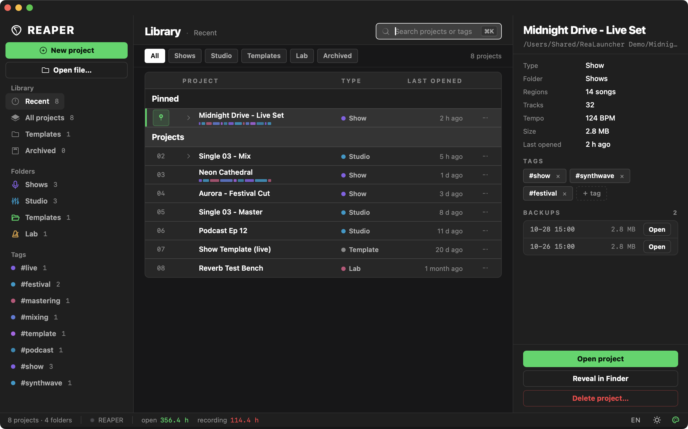
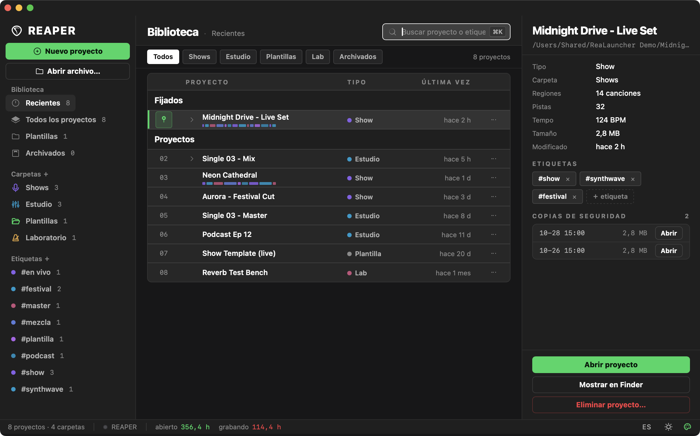
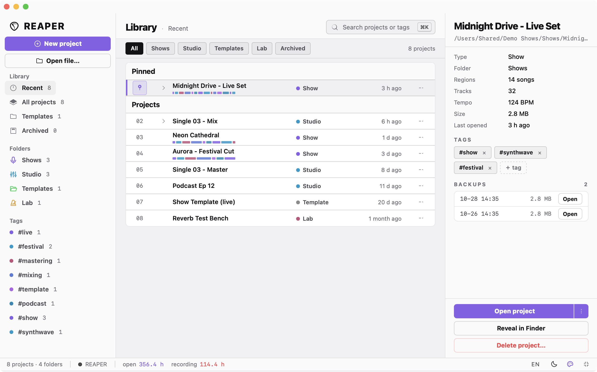
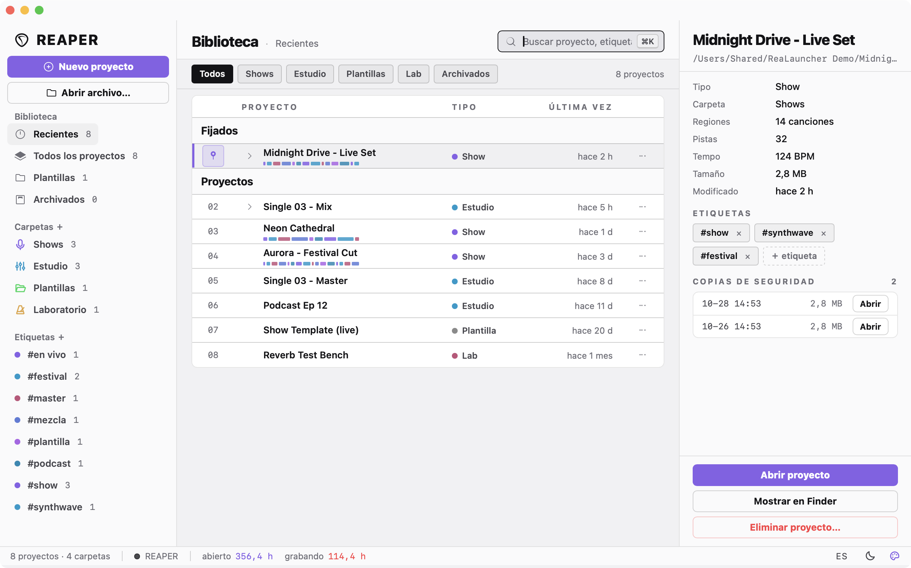
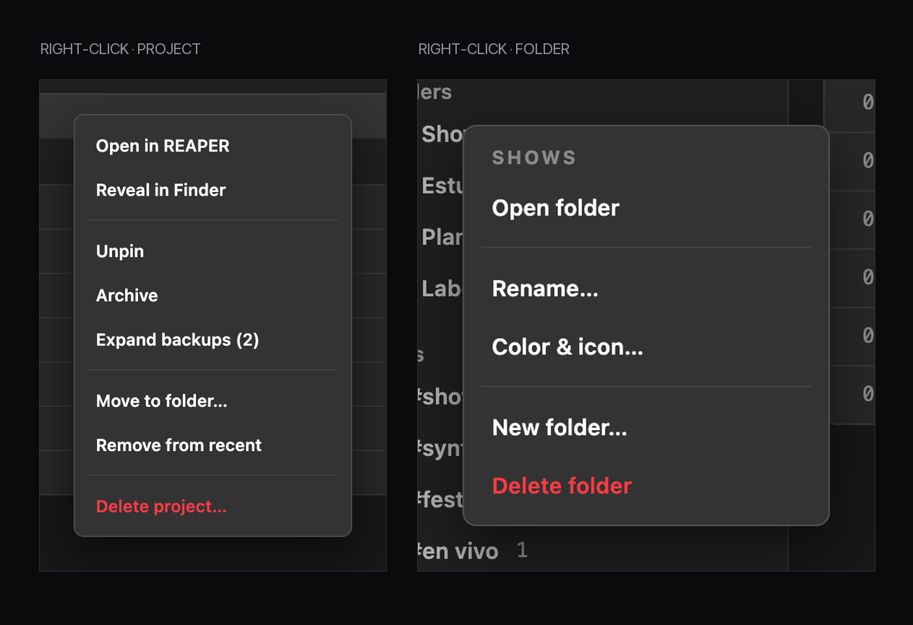
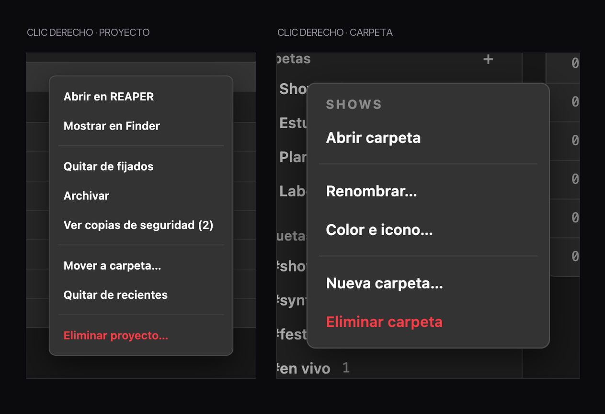
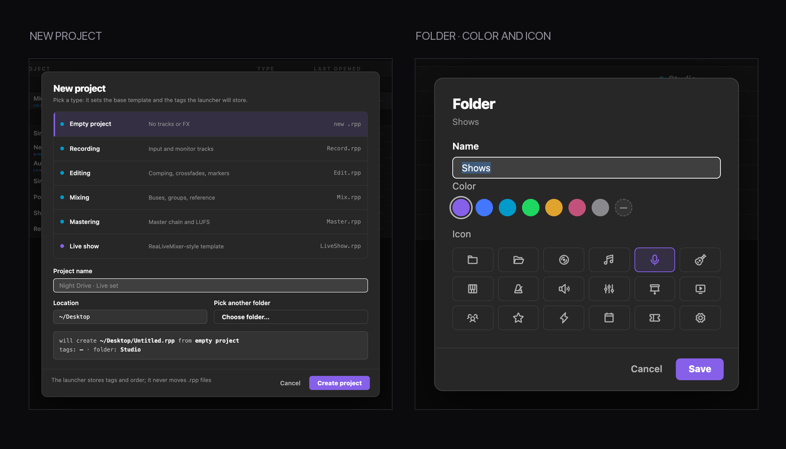
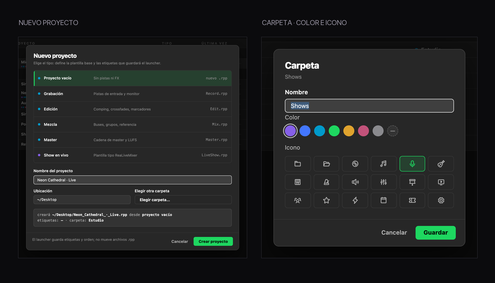

for REAPER
A project launcher for REAPER that doesn't look like 2003. Native, fast, and with folders, tags, backups and an inspector that actually tells you something. Un launcher de proyectos para REAPER que no parece de 2003. Nativo, rápido, y con carpetas, etiquetas, copias de seguridad y un inspector que sí te dice algo.
Made by humans and AI (but with a properly built UI), for humans with feelings. Hecho por humanos e IA (pero con UI bien hecha), para humanos con sentimientos.
$ curl -fsSL https://raw.githubusercontent.com/djenttleman/project-launcher-for-reaper/main/bootstrap.sh | bash
macOS 13+ · Xcode Command Line Tools · REAPER 7 macOS 13+ · Xcode Command Line Tools · REAPER 7


Reapertips, ReaSet Pro, Cyan, Amber and Rose — with a real light mode.Reapertips, ReaSet Pro, Cian, Ámbar y Rosa, con modo claro de verdad.
Organize by show, client or mood. It never moves a single file.Organizá por show, cliente o estado de ánimo. Nunca mueve un archivo.
Regions, tracks, tempo, size and last opened, read from the .rpp.Regiones, pistas, tempo, tamaño y última apertura, leídos del .rpp.
Every .rpp-bak next to your project, one click away.Cada .rpp-bak junto a tu proyecto, a un clic.
Empty, recording, editing, mixing, mastering or live show.Vacío, grabación, edición, mezcla, master o show en vivo.
Hours with REAPER open and hours actually recording.Horas con REAPER abierto y horas realmente grabando.
Lua scripts in your resource folder, registered as an action.Scripts Lua en tu carpeta de recursos, registrados como acción.
Switch languages from the status bar; it remembers your choice.Cambiá de idioma desde la barra inferior; recuerda tu elección.
Opens in ~0.4 s, no white flash, no visible redraw.Abre en ~0,4 s, sin flash blanco ni repintados visibles.






Every glyph in the interface, bundled as SVG paths. No runtime dependency.Todos los glifos de la interfaz, empaquetados como paths SVG. Sin dependencias en ejecución.
The palette this whole thing leans on: that violet, the cyan and rose, and grays that aren't flat.La paleta sobre la que se apoya todo: ese violeta, el cian y el rosa, y grises que no se sienten planos.
Spacing, type scale and components borrowed on purpose, so both tools feel the same.Espaciado, escala tipográfica y componentes tomados a propósito, para que las dos herramientas se sientan iguales.
The model that wrote a good chunk of this with me.El modelo que escribió buena parte de esto conmigo.